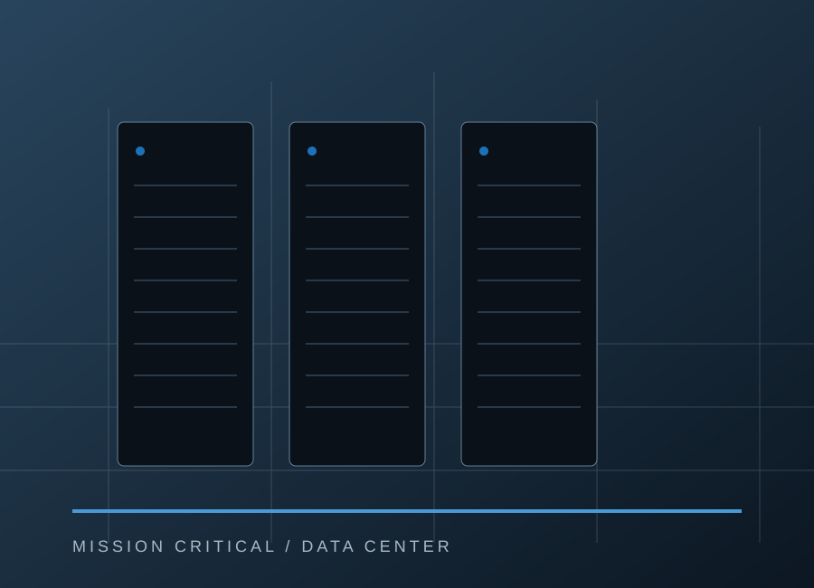

01 / Sanierung
01 / SanierungBestand mit PerspektiveSanierung &
Sanierung &
Innenausbau.
Wohnungen, Räume und Details. Lernen Sie den Bereich anhand unserer aktuellen Projektbilder kennen.
Sanierung entdecken →Diese Vorschau ist nicht öffentlich freigegeben. Bitte Passwort eingeben.
Sanierung und Innenausbau. Rechenzentren und technische Infrastruktur. Zwei Schwerpunkte – ein direkter Ansprechpartner für Ihr Bauvorhaben.

Bestehende Räume weiterdenken und anspruchsvolle Bauvorhaben begleiten: Bei KONTEC treffen Sanierung und Innenausbau auf den Schwerpunkt Rechenzentren. Entdecken Sie beide Bereiche.
01 / SanierungWohnungen, Räume und Details. Lernen Sie den Bereich anhand unserer aktuellen Projektbilder kennen.
Sanierung entdecken →
02 / RechenzentrenIllustrationEin eigener Schwerpunkt für technisch anspruchsvolle Bauvorhaben. Konkrete Projektinformationen und Referenzen folgen.
Bereich kennenlernen →Drei Projekte, unterschiedliche Perspektiven. Entdecken Sie Wohnräume, Bäder und Details in unseren Bildergalerien.
Bauleistungen und baukonstruktive Projektentwicklung bilden den Kern von KONTEC-CONSTRUCT. Für Fragen zu Ihrem Vorhaben erreichen Sie uns direkt in Frankfurt am Main.
Das Unternehmen kennenlernen →Sanierung, Innenausbau oder Rechenzentrum: Sprechen wir über Ihr Bauvorhaben.